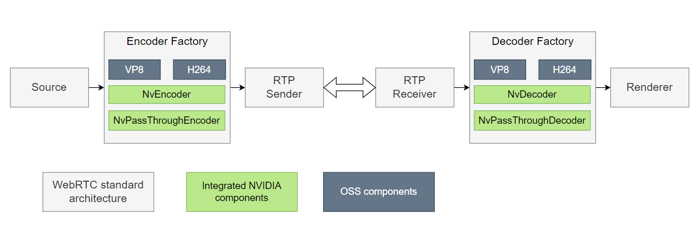
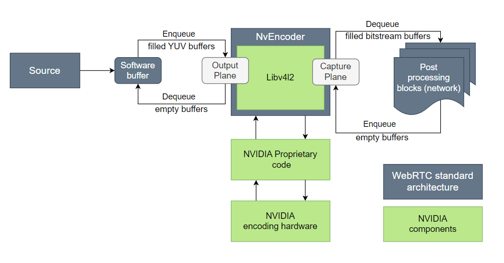
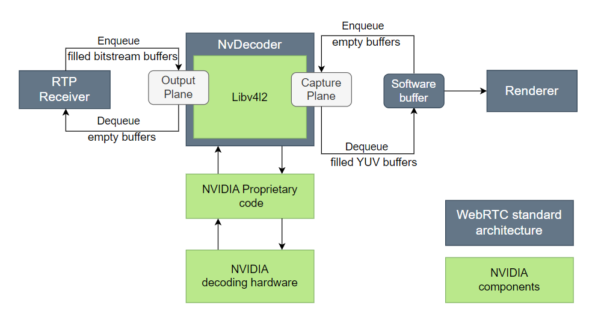
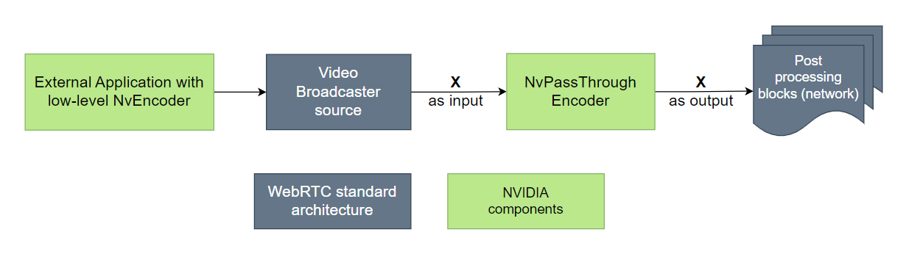
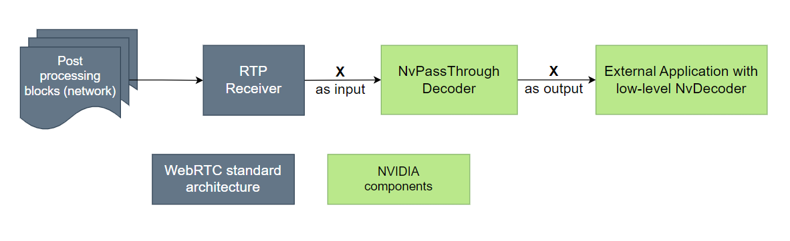
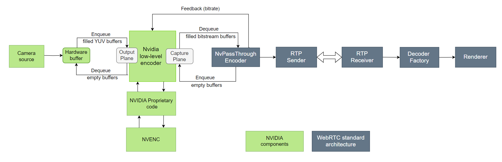

Hardware Acceleration in the WebRTC Framework#
WebRTC is a free open source project that provides real-time communication capabilities to browsers and mobile apps.

A major feature of WebRTC is the ability to send and receive interactive HD videos. Fast processing of such videos requires hardware accelerated video encoding.
The open-source WebRTC project framework currently supports several software encoder types: VP8, VP9, and H264. NVIDIA® has integrated hardware accelerated H.264 encoding, along with H.264 and VP8 decoding, into the WebRTC encoding framework. This document uses the name NvEncoder to denote the HW accelerated encoder feature and NvDecoder to denote the HW accelerated decoder feature.
NVIDIA introduces two specialized codecs in the WebRTC framework: NvPassThroughEncoder and NvPassThroughDecoder. As their names imply, these codecs serve as complete pass-through mechanisms, delivering the input directly as the output.
NvPassThroughEncoder is useful for sending already encoded buffers through external encoders to the WebRTC framework for encoding. Conversely, NvPassThroughDecoder is useful for external decoders that need to decode bitstream received from the WebRTC framework.
Typical Buffer Flow for NvEncoder#
The following diagram shows a typical buffer flow in the hardware accelerated WebRTC encoding framework.

A source delivers YUV frames, which the framework converts to I420 format and queues on the output plane of the encoder. The output plane buffers are sent to NvEncoder using proprietary NVIDIA low-level encoding libraries. NvEncoder returns filled encoded buffers on its capture plane.
The encoded buffers are sent for further processing as required by the application.
Typical Buffer Flow for NvDecoder#
The following diagram shows a typical buffer flow in the hardware accelerated WebRTC decoding framework.

A source delivers encoded buffers, which the framework queues on the output plane of the encoder. These output plane buffers are forwarded to NvDecoder using proprietary NVIDIA low-level decoding libraries.
NvDecoder processes the output plane buffers and returns filled decoded NV12 buffers on its capture plane, which are subsequently converted to I420 SW buffer format and sent for further processing as required by the application.
Typical WebRTC Architecture of NvPassThroughEncoder#
The following diagram shows the basic architecture of the NvPassThroughEncoder in the WebRTC encoding framework.

NvPassThroughEncoder is suited for situations where an external application encodes and sends the encoded bitstream to a WebRTC broadcaster.
Instead of raw YUV format as encoder input, which would typically be expected, NvPassThroughEncoder accepts the encoded bitstream and forwards it to the next component without performing any processing on the input.
The encoded buffers are then sent for further processing as required by the application.
Typical WebRTC Architecture of NvPassThroughDecoder#
The following diagram shows the basic architecture of the NvPassThroughDecoder in the WebRTC decoding framework.

NvPassThroughDecoder is suited for situations where an external application decodes and can receive the bitstream from a WebRTC receiver.
NvPassThroughDecoder accepts the encoded bitstream as input and forwards it to the next component without performing any processing on the input. The low-level decoder can retrieve the bitstream from the Y component of the YUV format, with the bitstream size indicated by the width of the YUV buffer from the NvPassThroughDecoder.
The decoded buffers are then sent for further processing as required by the application.
Application and Unit Test Setup#
A README file in the WebRTC_r36.3.0_aarch64.tbz2 package contains
additional information about application usage and setup.
To set up and test the NvEncoder sample application#
Video Loopback application: To run the application, enter this command:
$ ./video_loopback --codec H264 --width 1280 --height 720 --capture_device_index 0
Where:
--codecspecifies the encoding format. Hardware encoding currently supports only H.264.--widthspecifies the frame width.--heightspecifies the frame height.--capture_device_indexspecifies the index of/dev/video<x>.
If the WebRTC framework works correctly, the application displays the camera stream with the desired width and height. It scales if WebRTC detects frame drops.
Peer connection Client/Server application:
Camera setup: Connect a USB camera to the NVIDIA® Jetson™ device.
Server setup: To start the peerconnection_client application on the Jetson platform, enter the command:
$ ./peerconnection_server
This command starts the server on port 8888 with the default configuration.
Client setup: To start two instances of the
peerconnection_clientapplication on the Jetson platform, enter the commands:$ ./peerconnection_client --autoconnect --server <Server.IP> $ ./peerconnection_client --server <Server.IP> --autoconnect --autocall
Each command starts an instance that connects a client to the server automatically. The second command uses the
--autocalloption to call the first available other client on the server without user intervention.
H.264 unit test for NvEncoder: Enter the command:
$ ./modules_tests --gtest_filter="TestNvH264Impl.*" --gtest_repeat=<num_of_iterations>
If the software on the Jetson device displays an error for pulseaudio:
Enter this command to install pulseaudio:
$ sudo apt install pulseaudio
Enter this command to start the pulseaudio daemon:
$ pulseaudio --start
Important Method Calls for NvEncoder#
NvEncoder is based on the LibNvVideoEncoderTemplateAdapter, defined in the
header file:
webrtc_headers/api/video_codecs/video_encoder_factory_template_libnv_adapter.h
NvVideoEncoder class and implementation are defined in the header file:
webrtc_headers/modules/video_coding/codecs/nvidia/libnv_encoder.h
These header files are present in the package WebRTC_r36.0_aarch64.tbz2.
This section summarizes important calls to NvEncoder.
To create a hardware-enabled video encoder#
Execute the method call:
std::unique_ptr<VideoEncoder> CreateVideoEncoder(const WebRTC::SdpVideoFormat& format)
Where
formatspecifies the desired encoding format. Currently,SdpVideoFormatfor NvEncoder only supports H.264.
The method creates and returns an NvVideoEncoder object for the
specified format.
To query the video encoder#
Execute the function call:
CodecInfo QueryVideoEncoder(const SdpVideoFormat& format)
Where
formatspecifies the desired encoding format.
The function queries the video encoder and returns its codec information.
To get supported video formats#
Execute the method call:
std::vector<SdpVideoFormat> GetSupportedFormats()
The method returns a vector of SdpVideoFormat objects with all formats supported by the encoder.
Important Method Calls for NvDecoder#
This section summarizes important calls to NvDecoder.
NvDecoder is based on the LibNvVideoDecoderTemplateAdapter, defined in the
header file:
webrtc_headers/api/video_codecs/video_decoder_factory_template_libnv_adapter.h
NvVideoDecoder class and implementation are defined in the header file:
webrtc_headers/modules/video_coding/codecs/nvidia/libnv_decoder.h
These header files are present in the package WebRTC_r36.3.0_aarch64.tbz2.
To Create a Hardware-enabled Video Decoder#
Execute the method call:
std::unique_ptr<VideoDecoder> CreateVideoDecoder(const WebRTC::SdpVideoFormat& format)
Where
formatspecifies the desired decoding format. Currently,SdpVideoFormatfor NvDecoder supports H.264 and VP8.
The method creates and returns an NvVideoDecoder object for the
specified format.
To Query the Video Decoder#
Execute the function call:
CodecInfo QueryVideoDecoder(const SdpVideoFormat& format)
Where
formatspecifies the desired decoding format.
The function queries the video decoder and returns its codec information.
To Get Supported Video Formats#
Execute the method call:
std::vector<SdpVideoFormat> GetSupportedFormats()
The method returns a vector of SdpVideoFormat objects with all formats supported by the decoder.
The WebRTC Package#
The file WebRTC_r36.3.0_aarch64.tbz2 contains these files:
Header files: All WebRTC header files with their respective pathnames.
libwebrtc.a: A WebRTC library file.video_loopback: An application to test basic video loopback functionality.peerconnection_client: A client application that connects to a server and other clients.peerconnection_server: An application that creates a server and an interface to clients.module_test: An encoder unit test application.README: A README file for applications andNvVideoEncoderFactory.
The base commit ID for the library is d0c86830d00d6aa4608cd6f9970352e583f16308.
The commit ID corresponds to the OSS WebRTC project used for development. See this link for the OSS WebRTC project.
Limitations#
Hardware acceleration is currently available only for the H.264 encoder.
The video_loopback works only with the H.264 encoder.
USB Camera outputs buffers in YUY2 color format, but NVEncoder expects input in I420 or NV12 format, requiring a color conversion. This is currently done using the WebRTC framework on the CPU.
WebRTC Streaming Sample with Argus Camera Source#
This section uses the sample application webrtc_argus_camera_app to demonstrate WebRTC streaming of CSI camera input.
This sample application performs a zero-copy pipeline between the argus camera and H.264 NVIDIA hardware encoder and streams the output to web browser via WebRTC framework.
Building and Running#
Before you can build and run the sample, ensure that you meet the following prerequisites:
You have a connected camera.
You have extracted the package by completing the following steps:
Download the
webrtc_argus_camera_app_src.tbz2package from the L4T Driver Package (BSP) sources.Extract the
webrtc_argus_camera_app_src.tbz2package.Install the dependency packages as provided below:
$ apt-get install -y --no-install-recommends \\ g++ \\ libjsoncpp-dev \\ libssl-dev \\ uuid uuid-dev \\ gstreamer1.0-plugins-base \\ gstreamer1.0-plugins-good \\ gstreamer1.0-plugins-ugly \\ gstreamer1.0-plugins-bad \\ libgstreamer1.0-0 \\ libgstreamer-plugins-base1.0-dev \
Configure display using the following command:
$ xinit & $ export DISPLAY=:0
To Build#
Execute the following commands:
$ cd webrtc_argus_camera_app_src $ make
To Run#
Execute the following command:
launch_nvwebrtc
Open the URL displayed in the console output in any web browser (preferably Google Chrome):
http://<ip address>:<port number>/example/
Click on the Select a camera drop-down list and choose cam.
Click on start button to start streaming and stop button to stop streaming.
After stopping the stream, exit the app using Ctrl+C keyboard shortcut.
Note
Ensure the firewall allows the HTTP ports. Only a single instance can be run at a time.
Supported Options#
The below table provides a list of supported options.
Option |
Description |
|---|---|
–perf |
Print encoder performance |
–help |
Print this help |
Data Flow Block Diagram#
Here is the flow of data through this sample application:

The CSI camera input is accessed via the Gstreamer plugin nvarguscamerasrc and sent to the low-level encoder. The output of the low-level encoder is sent to the NvPassThroughEncoder in the WebRTC framework.
The bitstream is converted to RTP packets and sent over the network and is played on the web browser.